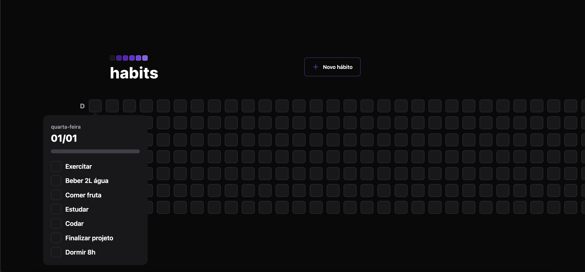
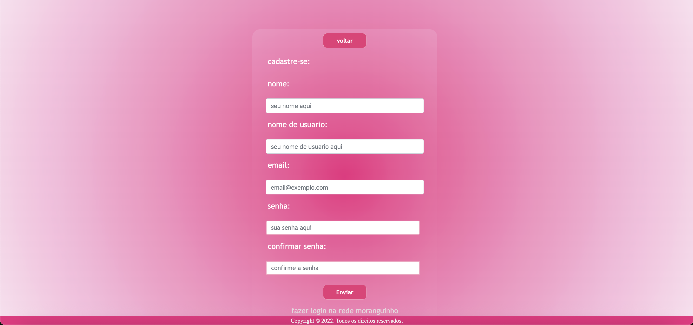
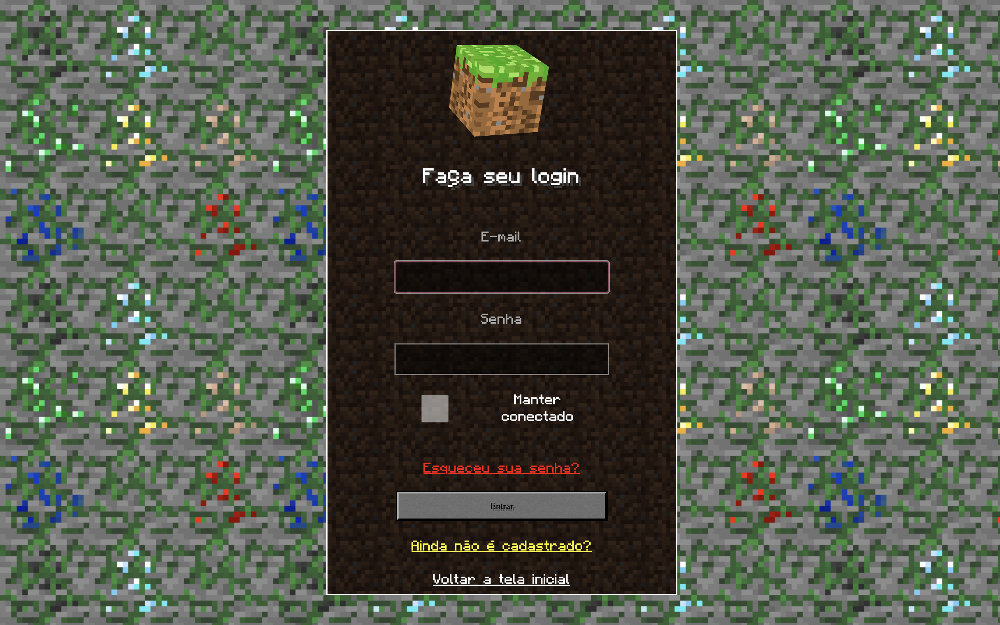
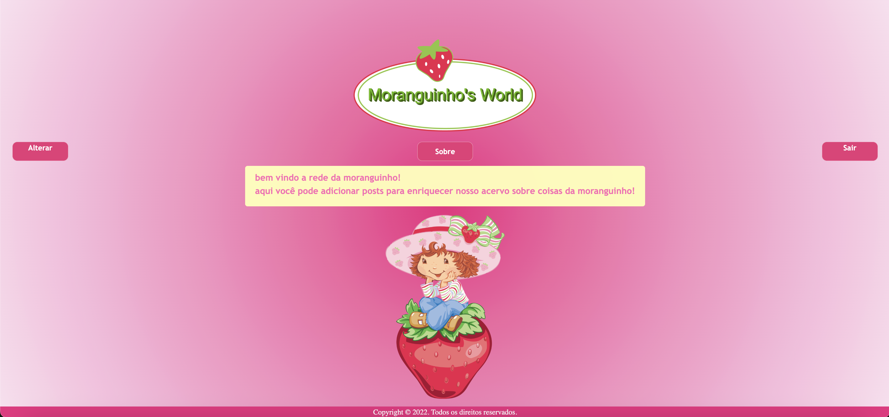
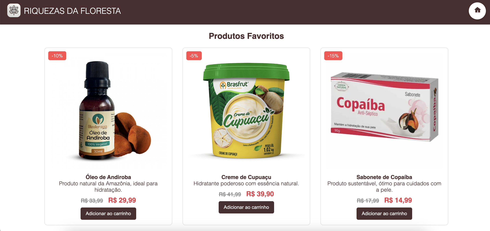
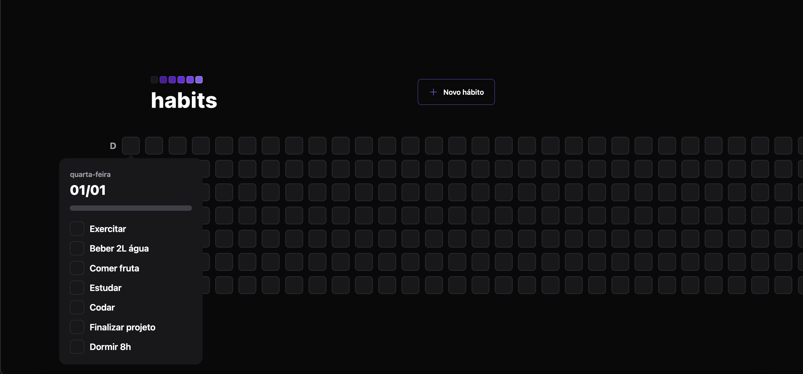
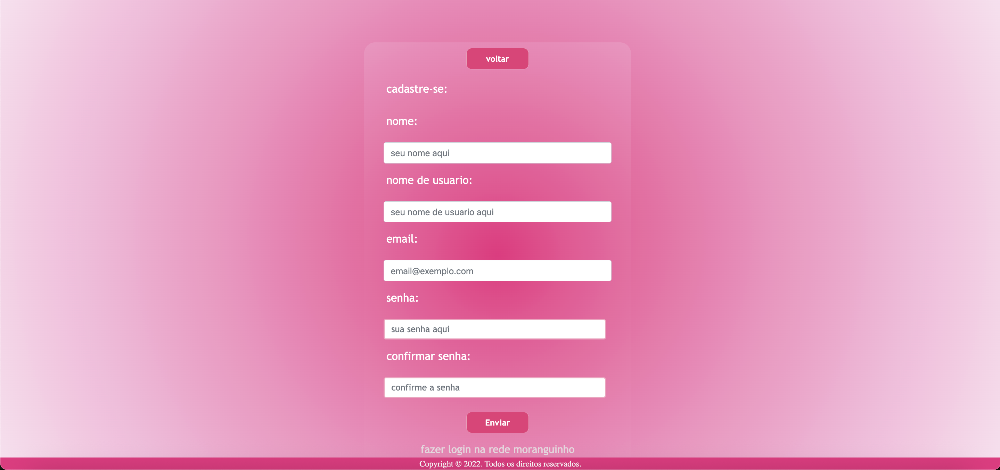
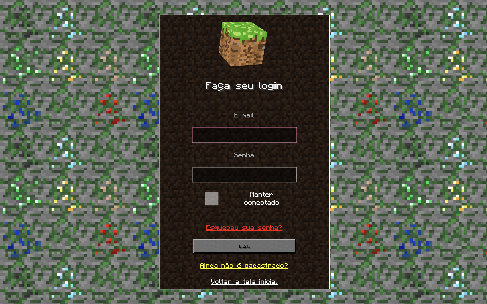
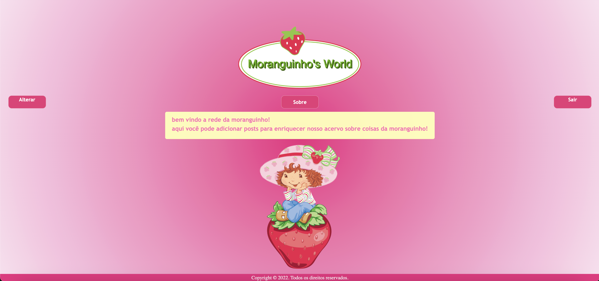
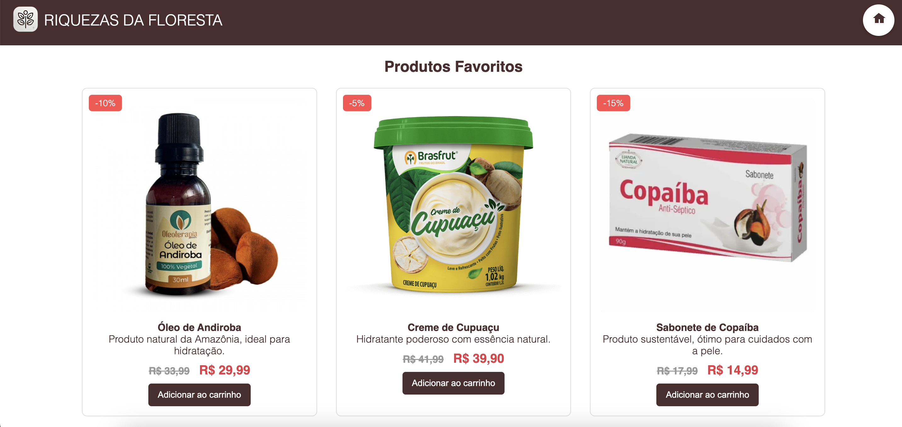

Tenho uma base sólida em desenvolvimento de software e suporte técnico, com proficiência em linguagens como C#, PHP e Python. Também possuo experiência prática em desenvolvimento front-end (HTML, CSS, JavaScript) e manipulação de bancos de dados SQL. Além disso, adquiri habilidades em administração de servidores Linux e monitoramento de redes com ferramentas como Nagios e Observium.
Sou graduada em Análise e Desenvolvimento de Sistemas pela FATEC Presidente Prudente e tenho mais de 4 anos de experiência em tecnologia, atuando em suporte técnico, administração de servidores e desenvolvimento de software. Atualmente, estou em transição para uma carreira focada em desenvolvimento, buscando oportunidades que me permitam explorar a área de programação. Minha trajetória começou quando conheci a oportunidade de criar meu próprio site utilizando HTML e CSS em 2020. Desde então, os caminhos com as tecnologias se encontraram. Fui hackeada em meu Facebook (não utilizo mais esta rede social), e isso me despertou a curiosidade sobre como as pessoas conseguem fazer isso. Depois de muita pesquisa e estudos, acabei me apaixonando pela área e tudo que envolve tecnologia.

Meu sonho é trabalhar com desenvolvimento mobile e utilizar toda minha criatividade para ajudar pessoas e facilitar cada vez mais a experiência do usuário.
 








